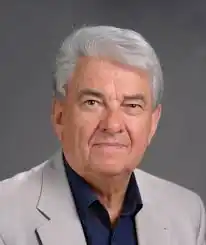
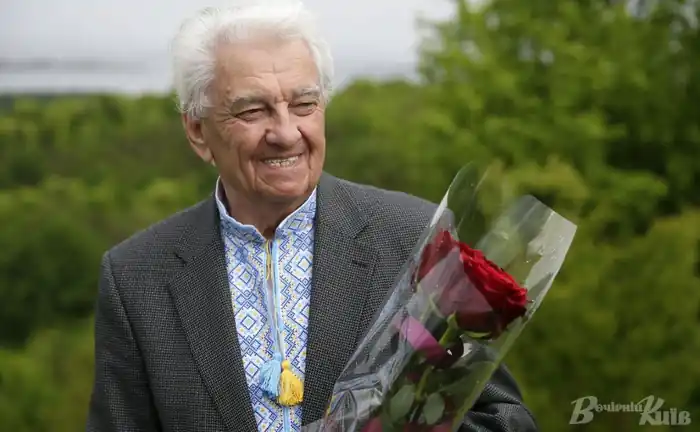

Вадим Дмитрович Крищенко народився 1 квітня 1935 року в Житомирі у родині вчителів. Закінчив факультет журналістики Київського національного університету імені Тараса Шевченка.
Дитинство минуло на берегах річки Хомори у бабусі з дідусем у селі Глибочок Баранівського району.
Після повернення батька з фронту Крищенки оселилися в Житомирі. Батько працював директором середньої школи № 1 на Мальованці, а згодом — у школі № 23, яку й закінчив Вадим. У 2011 році в Житомирській міській гуманітарній гімназії 23 ім. М. Очерета було відкрито музей Вадима Крищенка. Коли йому виповнилося 14 років (навчався у сьомому класі), померла його мати. Її світлий образ і тема малої батьківщини проходять крізь всю творчість поета. Писати вірші почав ще в школі. Великий вплив на його становлення як поета-пісняра справив Андрій Малишко. Вчився на факультеті журналістики Київського університету, відвідував літературну студію, якою керував Юрій Мушкетик, а старостою був Василь Симоненко. Він – Народний артист України (2007), заслужений працівник культури (1985), заслужений діяч мистецтв України (1995), член Національної Спілки письменників України з 1972 року, лауреат літературно-мистецьких премій імені Івана Нечуя-Левицького, імені Андрія Малишка та імені Дмитра Луценка. Автор більше 50 поетичних збірок та близько 1000 пісень, кавалер багатьох державних нагород – орденів Ярослава Мудрого V ступеня, повний кавалер ордена "За заслуги", ордена Трудового Червоного Прапора, найвищої київської відзнаки "Знак Пошани", найвищих нагород Української православної церкви – ордена Андрія Первозванного та ордена Святого Володимира, найвищої відзнаки громадських організацій – Лицар Вітчизни та багатьох інших. В 2015 В.Д.Крищенка нагороджено Почесною грамотою Верховної Ради України. Йому неодноразово присуджувалося звання "Кращий поет-пісняр України", багато разів ставав переможцем престижних конкурсів та фестивалів сучасної української пісні. Вадим Крищенко – автор сценаріїв багатьох відомих мистецьких заходів, зокрема, унікального театрально-пісенного дійства "Десять Господніх заповідей". Його авторські концерти неодноразово відбувались не лише в Національному палаці мистецтв "Україна", але й у престижних залах багатьох міст України за участю кращих виконавців вітчизняної сцени. Зараз В.Д.Крищенко є професором кафедри культурології Національного університету біоресурсів і природокористування України, почесним Доктором Київського університету технологій та дизайну. В м.Житомирі, де народився поет , і де закінчував школу № 23 (нині гімназія) у 2011 році відкрито музей-поетичну світлицю В.Д.Крищенка, а в селі Глибочок Баранівського району Житомирської області, де пройшло дитинство поета, вулицю, де він жив (тоді носила ім"я С.Будьонного), переіменовано на вулицю імені Вадима Крищенка. У жовтні 2017 в Житомирському обласному літературному музеї "Житомир", (вул.Київська, 45) за сприяння місцевих меценатів родини Козлових відкрито залу з експозицією, що присвячена життю і творчості поета. Експозиція, присвячена життю і творчості Вадима Крищенка, а відеосюжет про урочисте відкриття експозиції дивіться на офіційному каналі поета у ютубі за посиланням: Урочисте відкриття експозиції, присвяченої творчості В.Крищенка,2017″. У 2019 світ побачила перша книга про життя і творчість митця, до якої сам поет написав передмову, за авторством його арт-директорки Інни Павленко "Вадим Крищенко. Постскриптум або Далі буде".